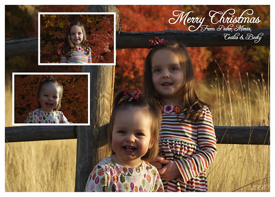

Christmas Card 2008
I'm afraid what will happen if I go after another design-centered posting here, but you're going to get it.

Luckily for you, this project only had one direction, and one result, and was fairly simple. At this point in time (+/- a few days), it's almost safe to say that if you haven't received a Christmas card from us, you're probably not going to get one. It may be personal, but it probably isn't, especially if you're reading this site. No offense, really. In any case, you can see the card, and read on if you are interested in its design.
Last year we tried to get the fall colors, but I think we failed. I don't feel we really captured the colors or the beauty of fall, especially for what this area has to offer, but instead captured a fairly cloudy gray day in the park. This year my goal was to really capture the beautiful fall colors, as well as some of the non-cityness in which we live.
Maria was the wardrobe specialist again, and although I didn't originally agree with the loud colors, I admit they ended up working very well, especially with the location. Becky (who was asleep in her car seat) and I scouted out three or four locations where we might be able to really capture the fall colors. Our final location was a fairly unknown park at the base of the mountains. It's probably more ideal for hikers and trail enthusiasts, but we found a great location. You can see the three original photos if you choose (... not any more).
Overall, I felt a nice script typeface, one that would flow nicely with the seasonality of the card, and somewhat contrast with the roughness of the wood and barbed wire. To cut this part short, since I know most of you don't care, I ended up choosing Freebooter Script. Despite what the price may lead you to believe, I feel it's a fabulous typeface. I especially liked the ascenders and descenders, and the extra flare they added to the feel of the typeface. As Mary put it, she liked “the flow of [the letters]” (while doing a hand motion like she's writing cursive).
The last thing of note, or hurdle for me was the coloring. Last year's card turned out a bit darker than I wanted. That was before I really started being made aware of color profiles. In layman's terms, a color profile is how a device (camera, monitor, printer) works with color. Just because you say “red” doesn't mean it's interpreted the same in every computer language. There are extremely geeky people out there, who sat down and agreed upon the definitions of colors, and now reference those definitions by name. What you see in one place isn't necessarily what you'll see in another, but these definitions/profiles try to make them all the same, and theoretically do accomplish that with fancy calibrators and stuff like that. Unfortunately, not everything references those profiles, so you still end up with fugliness at times.
To cut this part short as well, I did a number of tricks to try to get our pictures to be exactly what we wanted. I reassigned color profiles, photoshopped my children, changed layouts, and a few other things, just to get the final product to be lighter. The most important thing I did, however, was to run test prints. I sent my card to be printed in six different ways before I found the correct color setup.
I'm pleased with what we got, and thrilled the girls cooperated during what can be an unpleasant event. Despite all this techno-babble, Maria and I (and the girls) hope you each have a very Merry Christmas. What a special time of year to be reminded of such an historically significant event.
{kind=link}